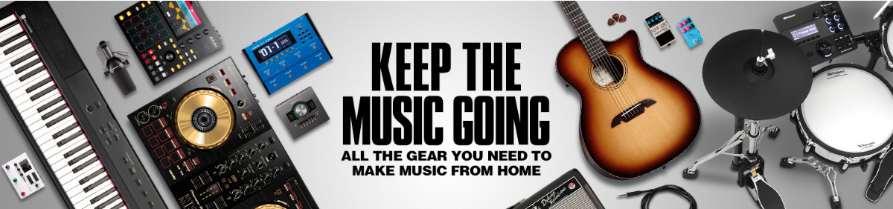
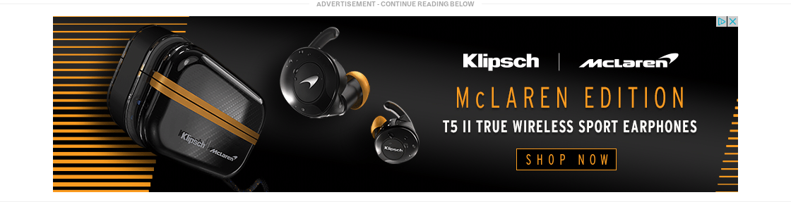
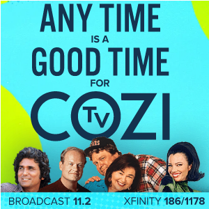
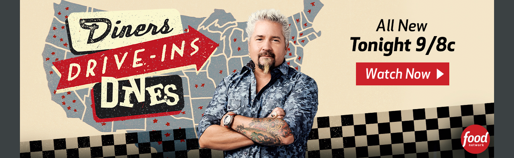
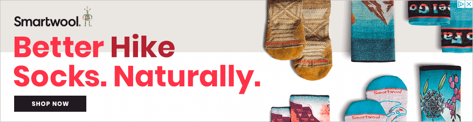

| 1461482 | | 4.80 | | entertaining | 0.500 | | good_design | 0.500 | | like_product | 0.300 | | trustworthy | 0.300 | | bad_design | 0.200 | | simple | 0.200 | | useful | 0.200 | | dislike_product | 0.100 | | unclear | 0.100 |
| | | | |
| 1462091 | | 4.91 | | simple | 0.545 | | good_design | 0.455 | | entertaining | 0.364 | | dislike_product | 0.182 | | like_product | 0.182 | | trustworthy | 0.182 | | useful | 0.182 | | bad_design | 0.0909 | | politicized | 0.0909 | | unclear | 0.0909 |
| - Beauty Products
- Public Relations
| | | - Just not interested in AVON. But the ad is bland and inoffensive.
- Bright, colorful and eye catching ad.
- none
|
| 1462117 |  | 5.50 | | good_design | 0.700 | | simple | 0.700 | | like_product | 0.600 | | entertaining | 0.400 | | trustworthy | 0.300 | | useful | 0.200 | | bad_design | 0.100 | | dislike_product | 0.100 | | unclear | 0.100 |
| | | | |
| 1463520 | | 5.40 | | good_design | 0.700 | | like_product | 0.600 | | entertaining | 0.500 | | useful | 0.300 | | simple | 0.200 | | unclear | 0.200 | | boring | 0.100 | | dislike_product | 0.100 | | trustworthy | 0.100 |
| | | | - Got me engaged to check the service out to see what it is about.
- Really good design! And I like TV shows so this is relevant to me. Good proportions of photos to text.
- Bold colors and well designed ad
- I'm not terribly sure what peacock is this doesn't explain it.
- i like streaming
|
| 1466686 |  | 5.10 | | good_design | 0.600 | | simple | 0.400 | | like_product | 0.300 | | entertaining | 0.200 | | trustworthy | 0.200 |
| | | | |
| 1467433 | | 5.80 | | good_design | 0.900 | | simple | 0.500 | | like_product | 0.400 | | entertaining | 0.300 | | trustworthy | 0.200 | | unclear | 0.200 |
| | | | - No, there are no other reasons.
|
| 1469101 | | 5.30 | | good_design | 0.800 | | entertaining | 0.600 | | simple | 0.500 | | like_product | 0.400 | | boring | 0.100 | | dislike_product | 0.100 | | trustworthy | 0.100 | | unclear | 0.100 |
| | | | - Love the colors and the animals, beautiful picture and design. This is a great ad to get people interested in going to college to get a wildlife degree.
- Simple but eye catching ad.
- I think that if I'm interested in a masters's in anything, I'll pursue that off more than a random internet ad.
- I like puffins. Are these puffins?
|
| 1469331 |  | 5.18 | | entertaining | 0.545 | | good_design | 0.455 | | like_product | 0.455 | | simple | 0.364 | | bad_design | 0.273 | | useful | 0.273 | | trustworthy | 0.182 | | unclear | 0.182 | | boring | 0.0909 | | dislike_product | 0.0909 |
| | | | - Nice colors, not deceptive
- none
|
| 1472063 |  | 5.50 | | simple | 0.900 | | good_design | 0.600 | | like_product | 0.500 | | trustworthy | 0.300 | | entertaining | 0.200 | | useful | 0.100 |
| | | | |
| 1476943 | | 5.40 | | good_design | 0.500 | | trustworthy | 0.400 | | entertaining | 0.300 | | like_product | 0.300 | | simple | 0.300 | | unclear | 0.200 | | useful | 0.200 | | boring | 0.100 |
| | | | - what's the price?
- Puppies are cute and saving up to $19.99 is a really good deal.
- I don't have a dog so I guess this is just an irrelevant ad
- Don’t trust the brand
- The dogs were cute
|
| 1477968 |  | 5.40 | | good_design | 0.500 | | like_product | 0.400 | | useful | 0.400 | | entertaining | 0.300 | | simple | 0.300 | | dislike_product | 0.200 | | trustworthy | 0.200 | | boring | 0.100 | | unclear | 0.100 |
| | | | - I like the company and it’s products
- Sadly, I am allergic to wool and can also no longer go hiking myself, so I would not have a use for these socks. I can see them as being very useful for those who still hike though or simply like the concept of hiking and want warm feet in the wintertime. I also like the fact that the ad clearly stated that these are wool and intended for hiking and even showed at least partial pictures of the designs. Thus, I would consider this a good ad even though I cannot use the product. Note that if I was a potential buyer, I would want to read reviews before purchasing the socks as the ad does not give a lot of details about them.
|
| 1480643 | | 5.30 | | good_design | 0.800 | | like_product | 0.500 | | entertaining | 0.400 | | simple | 0.400 | | useful | 0.400 | | boring | 0.100 | | unclear | 0.100 |
| | | | - Simply that it looks not affordable to me
|
| 1480905 | | 4.50 | | good_design | 0.500 | | simple | 0.500 | | entertaining | 0.400 | | like_product | 0.300 | | boring | 0.200 | | trustworthy | 0.200 | | useful | 0.200 | | dislike_product | 0.100 | | politicized | 0.100 | | unclear | 0.100 |
| | | | - This ad is in a position that I expect.
- It looks a little bland for an ad on exploring Israel. Would have been nicer if it had more colors.
|